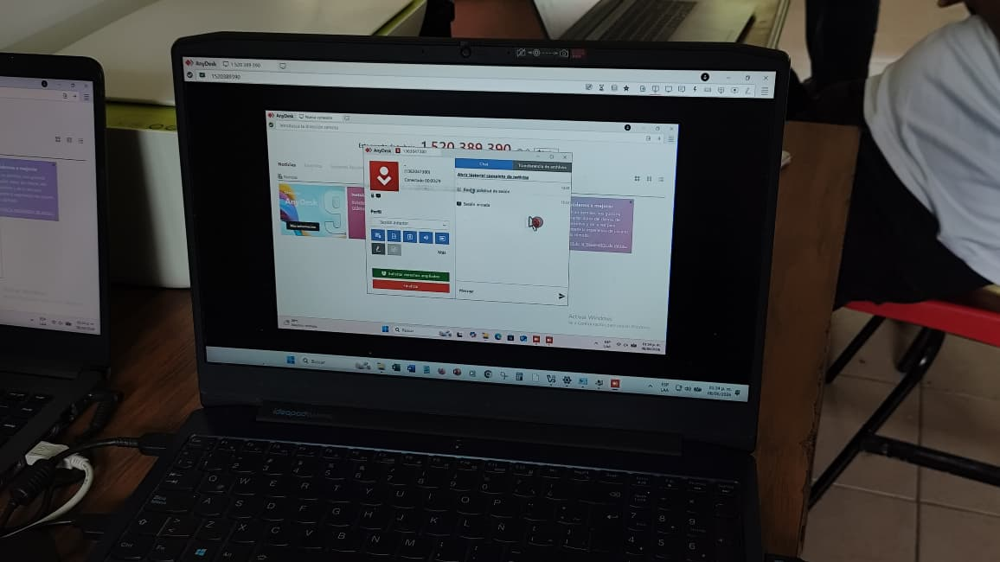
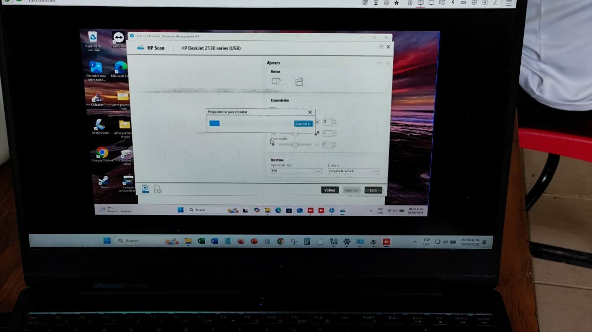

Mantenimiento preventivo
Limpieza logica, revision de arranque, programas instalados y recomendaciones para mejorar rendimiento.
Fenix Labs documenta un flujo completo de atencion: diagnostico, soporte remoto, mantenimiento presencial, evidencias, hoja de servicio y seguimiento claro para cada solicitud.
Estado del sistema
Bloques claros para ubicar que tipo de ayuda necesita el usuario antes de iniciar la atencion.
Limpieza logica, revision de arranque, programas instalados y recomendaciones para mejorar rendimiento.
Conexion autorizada, instalacion de controladores, configuracion de impresoras y asistencia paso a paso.
Revision de procesos, actualizaciones, antivirus, almacenamiento y estabilidad general del sistema.
Inspeccion fisica, perifericos, componentes, cableado y diagnostico para reparacion o reemplazo.
Una tabla sencilla para explicar alcance, limites y nivel recomendado de servicio.
| Caracteristica | Basico | Intermedio | Avanzado |
|---|---|---|---|
| Diagnostico inicial | ✓ | ✓ | ✓ |
| Limpieza logica | ✓ | ✓ | ✓ |
| Controladores y configuracion | × | ✓ | ✓ |
| Revision presencial | × | Opcional | ✓ |
| Reporte documentado | Breve | Completo | Completo + evidencia |
La ruta mantiene ordenado el servicio desde la recepcion hasta el cierre documentado.
Se registra el problema, canal de contacto y datos principales.
Se revisan sintomas, acceso remoto y posibles causas.
Se aplica la solucion autorizada y se documentan acciones.
Se realizan pruebas, evidencia y recomendaciones finales.
La practica remota queda registrada con capturas, bitacora y hoja de servicio consultable.


El proyecto simula un control de solicitudes para consultar estado, acciones realizadas y cierre del servicio.
El proceso fue claro y pude identificar que se hizo en cada etapa.
★★★★★La documentacion conecta normas, protocolo y evidencia real.
★★★★★Si. El usuario debe permitir el acceso y puede cerrar la sesion cuando lo necesite.
Solo si el usuario lo solicita. La privacidad y la autorizacion quedan como parte del protocolo.
Se recomienda revision presencial y se documenta si hace falta reparacion o reemplazo de componente.
Lo que opinan del proyecto
Participa con tu cuenta de GitHub. Los comentarios se guardan en las Discussions oficiales del proyecto.